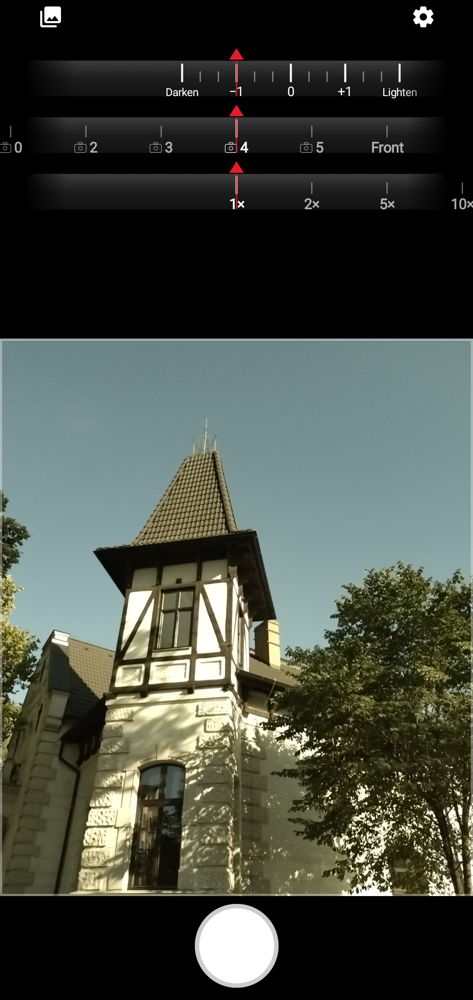
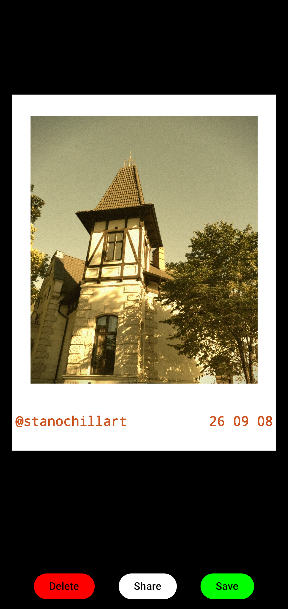
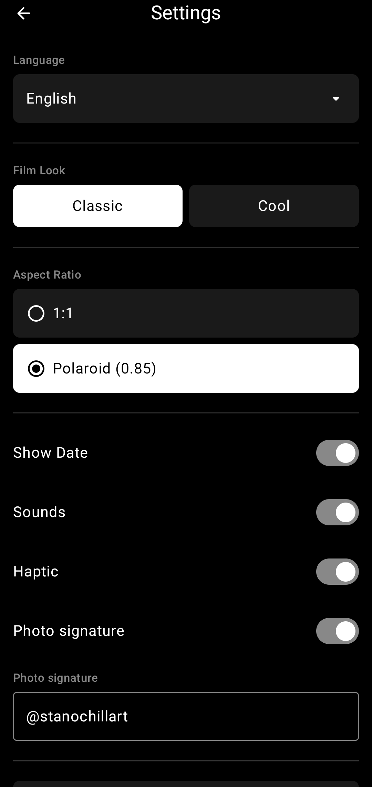
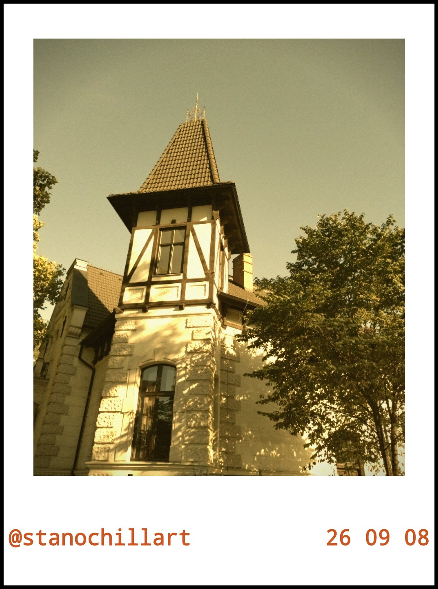

Core
Auslösen. Warten. Das Foto entwickelt sich.




Das Telefon korrigiert das Foto, bevor du es gesehen hast. Schärft. Glättet. Die Aufnahme ist perfekt. Und niemandes.
CoreCamera korrigiert die Welt nicht. Es entwickelt sie.
Auslöser. Ein kurzer Ton. Zuerst Weiß. Dann ein Raum, ein Gesicht, Korn, ein dicker weißer Rahmen. Wie ein Polaroid im Telefon.
Zwei Looks. Warmes altes Filmmaterial. Oder kalt, nachts. Zwei Formate. Quadrat. Oder klassisches Polaroid.
Die Helligkeit stellst du selbst. Die Galerie gehört nur dir. Das Foto bleibt auf dem Gerät, bis du es sendest.
Für alle, denen jedes Handyfoto gleich vorkommt. Das ist kein Studio.